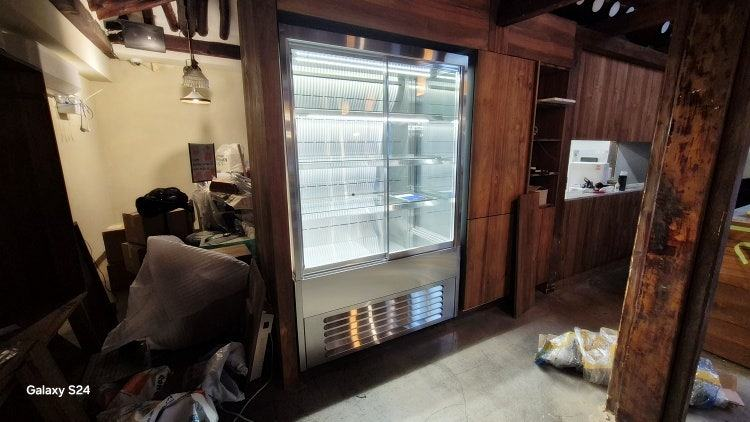
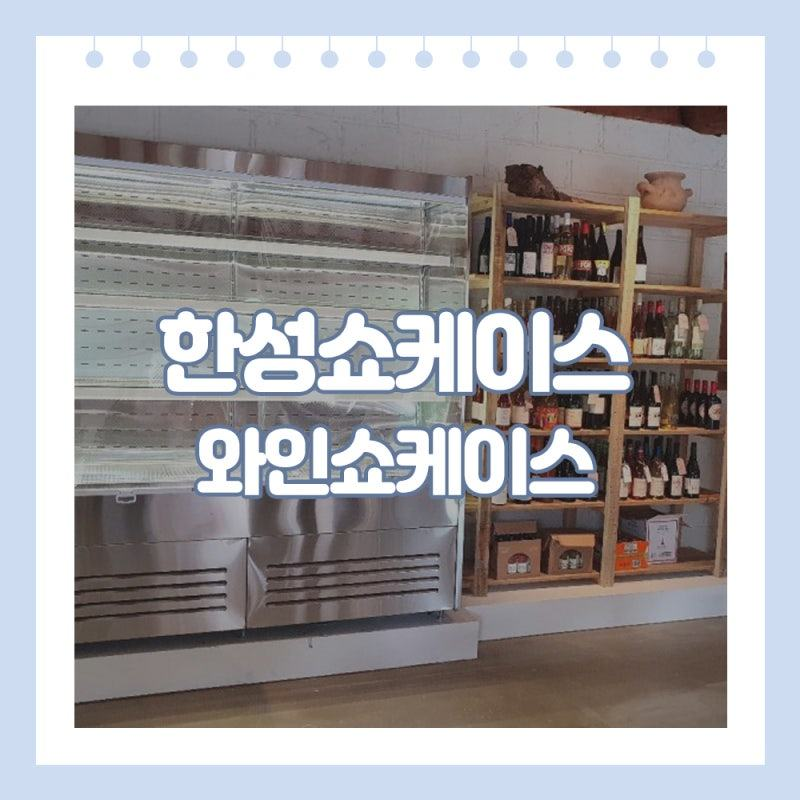
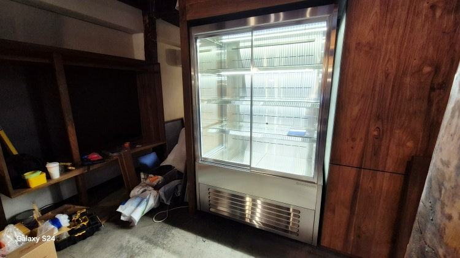
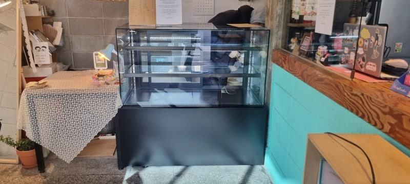
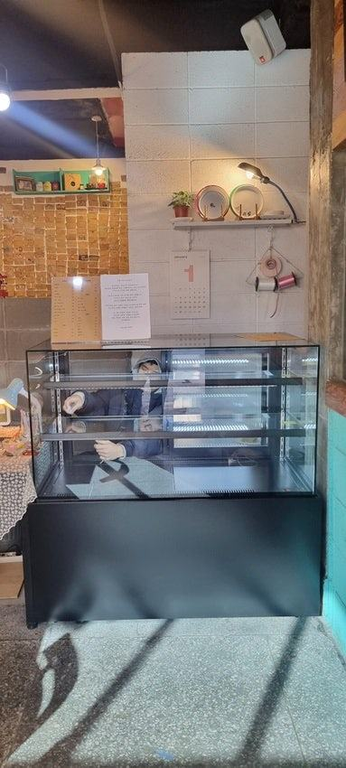

와인(음료)쇼케이스
와인바 창업비용, 와인쇼케이스에서 아끼면 안 되는 부분

와인바 창업비용을 줄이더라도 와인쇼케이스의 온도 안정성, 습도와 진동 관리, 빛을 막는 유리 사양은 아끼지 않는 편이 좋습니다. 대신 진열 수량을 지금 필요한 만큼으로 잡고, 외관 옵션을 정리하며, 운송·설치비가 포함된 견적인지 확인하면 불필요한 지출을 덜 수 있습니다.
안녕하세요. 와인바와 레스토랑의 와인쇼케이스를 공간에 맞춰 제작하는 한성쇼케이스입니다.
와인바를 준비하시는 사장님들의 창업비용 목록을 보면 보증금, 인테리어, 바 카운터, 주방 설비, 직원 급여, 초도 와인 재고까지 줄줄이 이어집니다.
그러다 보니 어느 항목을 줄여야 할지 고민이 깊어지시죠.
와인쇼케이스는 그 목록에서 덩치가 커 보여 먼저 줄이고 싶어지는 항목입니다. 그런데 와인바에서 쇼케이스는 수십, 수백 병의 재고 와인을 지키는 금고이자 손님이 앉자마자 보게 되는 벽면이기도 합니다.
잘못 줄이면 와인 품질과 분위기를 한꺼번에 잃습니다.
오늘은 와인바 창업비용 안에서 와인쇼케이스에 들어가는 돈을 어떻게 나눠 생각하면 좋은지 정리해 보겠습니다.
1. 아끼면 안 되는 것: 온도 안정성
와인은 온도가 오르내리기를 반복하면 코르크가 숨을 쉬듯 수축과 팽창을 거듭하며 맛이 상하기 쉽습니다.
문을 자주 여닫는 영업 시간에도 내부 온도를 고르게 지키는 냉각 성능이 와인쇼케이스의 핵심입니다.
레드와 화이트, 스파클링을 함께 둔다면 칸마다 온도를 다르게 맞출 수 있는 구성인지도 확인하세요. 적정 온도는 와인 종류와 서빙 방식에 따라 다르니, 주로 다룰 와인 리스트를 기준으로 상담받으시는 게 정확합니다.
- 문 여닫은 뒤 온도 회복 속도
- 칸별 온도 구분 가능 여부
- 콤프레셔 종류와 소음
2. 아끼면 안 되는 것: 습도·진동·빛
너무 건조하면 코르크가 말라 공기가 스며들고, 진동이 계속되면 와인 속 침전물이 가라앉지 못합니다. 콤프레셔 진동이 선반까지 전해지지 않는 구조인지 물어보세요.
홀과 가까운 바 공간이라면 저소음인지도 손님 경험에 직결됩니다.
빛도 와인에 부담을 줍니다. 햇빛이 드는 창가에 두거나 자외선을 막지 못하는 유리를 쓰면 오래 보관하는 와인일수록 손해가 큽니다.
조명은 라벨을 보여 주되 열이 적은 LED로, 유리는 빛과 결로를 함께 막는 사양으로 고르시길 권합니다.


3. 줄여도 되는 것: 수량과 외관 옵션
창업 초기부터 매장 벽 전체를 와인쇼케이스로 채울 필요는 없습니다. 초도 재고와 회전 속도를 따져 지금 필요한 수량만큼 냉장 칸을 두고, 나머지 벽은 상온 진열이나 오픈 선반으로 꾸미는 방법이 있습니다.
나중에 같은 디자인으로 한 대를 이어 붙일 수 있게 설계해 두면 확장도 어렵지 않습니다.
프레임 소재, 로고 각인, 장식 조명 같은 외관 옵션은 매장 콘셉트에 꼭 필요한 것만 남기세요. 본사가 자재를 대량 매입해 쓰기 때문에, 필요한 사양을 분명히 말씀해 주시면 덜어 낼 항목을 함께 정리해 드립니다.
- 초도 재고 기준으로 냉장 칸 수 정하기
- 확장 가능한 모듈 설계
- 외관 옵션은 콘셉트 핵심만
4. 견적서에서 빠지기 쉬운 비용
와인쇼케이스는 크고 무거워 운송과 설치가 만만치 않습니다. 지역에 따라 운송비가 얼마나 달라지는지, 출입문이 좁거나 엘리베이터를 쓸 수 없을 때 추가 인력이나 장비가 필요한지, 제작비·설치비·운송비가 모두 포함된 견적인지 꼭 확인하세요.
벽면에 매립하는 디자인이라면 기계실 통풍과 전기 공사가 인테리어 비용에 들어가는지도 미리 나눠 두셔야 나중에 예산이 꼬이지 않습니다.
체크리스트
- 온도 안정성과 칸별 온도 구분
- 진동·소음·빛 차단 사양
- 초도 재고에 맞춘 냉장 칸 수
- 꼭 필요한 외관 옵션만
- 운송·설치비 포함 여부와 반입 경로
현장에서 자주 보는 경우: 기성 와인쇼케이스가 공간과 어긋날 때
와인바나 레스토랑에서 기성 와인쇼케이스를 들였다가 크기와 모양, 디자인이 매장 인테리어와 어울리지 않아 고민하시는 경우를 자주 봅니다.
기성품은 크기도 모양도 대부분 비슷하게 나와, 공간에 맞는 옷을 입힌 듯한 정돈된 느낌을 내기 어렵기 때문입니다.
한성쇼케이스는 직영 공장에서 원하는 디자인을 그대로 구현해 와인쇼케이스를 제작하고, 판매보다 판매 이후의 관리를 더 중요하게 여깁니다.
쇼케이스는 고장이 날 수 있는 전자제품이라, 사후 관리가 잘 되는 제품을 고르는 것이 결국 창업비용을 지키는 길입니다.





자주 묻는 질문
와인셀러용 가정용 제품을 여러 대 쓰면 안 되나요?
초기엔 가능하지만 영업 중 잦은 개폐를 버티는 성능과 A/S 체계가 업소용과 다를 수 있습니다. 대수가 늘면 디자인 통일과 통풍 공간 확보도 어려워집니다.
와인쇼케이스를 바 뒤 벽면에 매립할 수 있나요?
가능합니다. 다만 기계실 열이 빠질 통풍 경로와 전원 위치를 인테리어 단계에서 함께 잡아야 하니, 도면이 나올 때 상담을 시작해 주세요.
창업 후 와인 수가 늘면 어떻게 하나요?
처음부터 같은 디자인으로 이어 붙일 수 있게 설계해 두면 한 대씩 늘리기 쉽습니다. 확장 계획을 상담 때 말씀해 주시면 반영해 드립니다.
매장 조건에 맞춰 만드는 한성쇼케이스
원하시는 제품 사진과 설치할 공간 사진만 보내 주셔도 매장에 맞는 구성을 추천해 드립니다.
- 전국 240여 개 A/S 전담 센터 운영
- 본사 대량 자재 매입으로 품질 대비 합리적인 가격
- 유럽제·삼성 냉각 콤프레셔 적용
- 국내 최초 쇼케이스 전문 디자이너 상주
매장 폭과 원하는 진열 구성을 알려 주세요. 실측과 견적을 안내해 드립니다.
031-986-2458